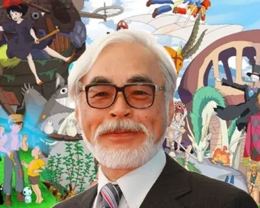

Hayao Miyazaki
Explore the extraordinary career of Hayao Miyazaki, a legendary animation director whose influence is revolutionizing the art of animation. Immerse yourself in Miyazaki's enchanted universe, and discover his major impact on cinema and the collective imagination worldwide.
Published today at 08:10.
Photography at the Oscar
A legitimate artistic heritage
Hayao Miyazaki, born January 5, 1941 in Tokyo, Japan, is one of the world's most influential and respected animation directors. His legacy is deeply rooted in the history of Japanese animation, and has paved the way for a new era of animation. Miyazaki comes from a family of artists. His father was the director of the family business, Miyazaki Airplane, which manufactured airplane control surfaces. This may well have influenced his love of aviation, which is reflected in many of his later films. His early interest in animation led him to attend Gakushuin High School, where he studied Western literature and animation, before entering Gakushuin University. However, his true passion for animation developed while working as an animator at Toei Animation.
Official Studio Ghibli image
Studio Ghibli: A crucial step
Miyazaki's hard work and talent soon attracted attention. Early in his career, he worked on animated TV series and participated in the creation of several animated films. However, his real success came when he and long-time collaborator Isao Takahata founded Studio Ghibli in 1985. With Studio Ghibli, Miyazaki made a number of films that have gone down in animation history. Works such as "Mon Voisin Totoro," "Le Voyage de Chihiro," "Princesse Mononoké," and "Le Château Ambulant" captured the hearts of audiences around the world with their visual beauty, narrative depth and universal themes. His films set new standards in animation, skilfully blending magic, nature and social concerns.

Image from the film
A legitimate legacy
Miyazaki's impact on animation is not limited to his box-office success. He has also opened the door to a new generation of animators, both in Japan and abroad, who draw inspiration from his unique artistic approach and innovative storytelling. He has helped broaden the scope of animation as an art form, leaving an indelible mark on the industry and the collective imagination of animated film fans. Hayao Miyazaki is a national treasure in Japan and an international icon of animation. His exemplary career continues to inspire generations of filmmakers, and his work will forever remain a benchmark in the world of animation.